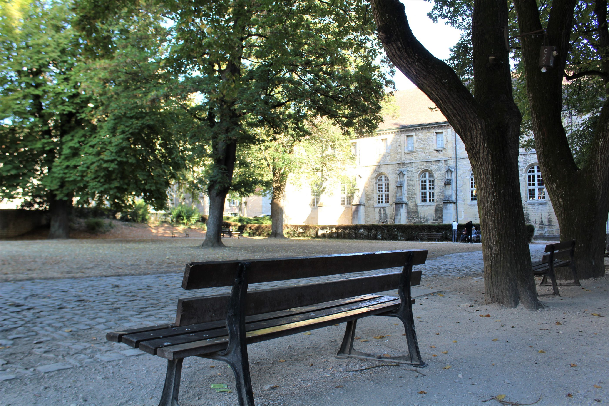

Majeure Ville intelligente et durable
Le projet du semestre
En quoi consiste le projet ?
- Par groupe de 4 (un groupe de 5)
- Chaque groupe reçoit un square de Dijon
- Un projet en deux parties
Une partie diagnostic
Etablir un portrait du square.- Les usages
- Les équipements
- La biodiversité
- L'historique
- Les réseaux techniques
- Les services
- Les événements
- Les habitants
- Les mobilités
- Les enfants
- L'entretien
Une partie solution
Proposer des solutions pour améliorer le square.- Réinventer les usages
- Recréer du lien social
- La biodiversité
Une nouvelle installation
- Un kiosque
- Une toiture végétalisée
- Une installation sportive
Calendrier
- Semaine 1 : Diagnostic
Les squares
https://estp.maps.arcgis.com/apps/mapviewer/index.html?webmap=2740cf6dc76e497ea3c55b1b28e1ce61Le square des Bénédictins
Le square Gabriel Lejard

Le square Gastin Roupnel

Le square Carrelet de Loisy

Votre travail
- Un rapport de 20 pages
- Une présentation